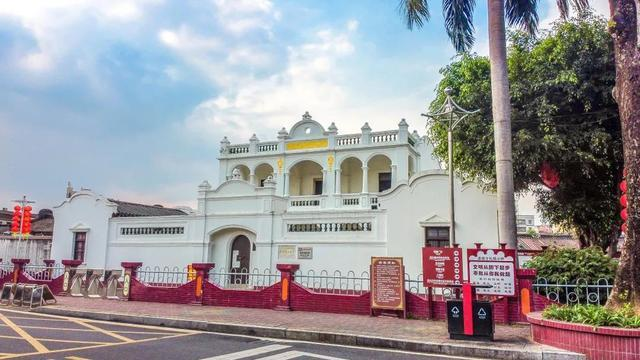

|  |
彭湃故居————革命遗址彭湃烈士故居位于海丰县城东龙津东路龙舌埔，坐北朝南。面临旧时海丰八景之一“龙津渔唱”的龙津河段。彭湃于1896年10月22日（清光绪二十二年，丙申年九月十六日）诞生于彭家祖屋大院，童年迁居这里。1925年2月末，广东革命军第一次东征到达县城，周恩来、谭平山和苏联顾问鲍罗廷、加伦都曾在此议事，后为反动派焚毁，只遗墙基。 |
红宫————革命遗址红宫原为明代学宫。于明洪武十二年（公元1379年）海丰知县郑源所建。海陆丰第三次武装起义胜利后，1927年11月18日至21日在这里召开海丰全县工农兵苏维埃代表大会，成立海丰县苏维埃政府，通过了“没收土地案”等八项政治纲领。第一个红色政权在此诞生，因此把学宫改称“红宫”。红宫东侧的红场旧址，原为明代“社仓”，清代时称“东仓”,海丰县苏维埃政权成立后，彭湃同志号召在此地兴建红场大门和司令台。 |
|
周恩来同志渡海纪念公园
——————————————————革命遗址1927年南昌起义后，部队南下广东潮汕，多方转战之后，起义军领导人周恩来、叶挺、聂荣臻等辗转到达陆丰。 此时身患重病的周恩来同志从湖东区到达南塘区，在陆丰县委的精心安排保护下，住在南塘李厝乡，后转移至兰湖村， 然后再转移到金厢黄厝寮村南塘区委书记黄秀文家隐藏治病。 |